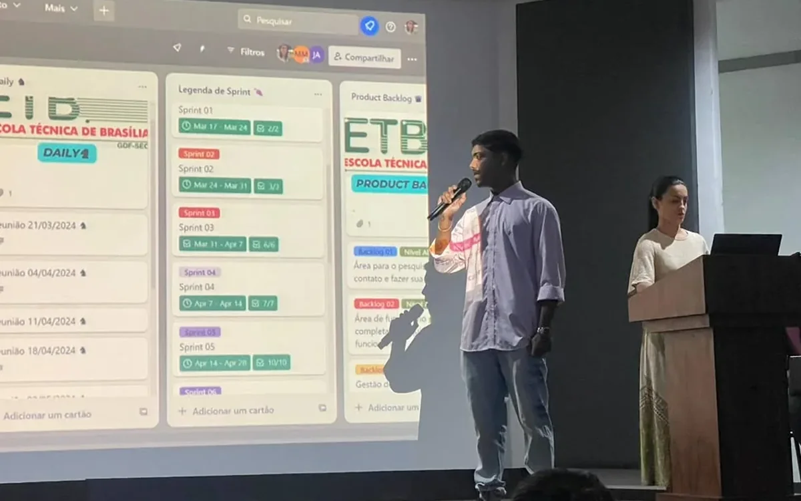

Exército Brasileiro (DFPC)
Desenvolvedor Full Stack e Analista de Dados em sistemas nacionais de gestão de Produtos Controlados.
Soluções em software empresarial com integridade, confiabilidade e foco em resultado.
Engenheiro de Software e Analista de Dados especializado em soluções corporativas.
Na economia contemporânea, a tecnologia é o centro do negócio: agiliza processos e garante integridade e confiabilidade às informações.
Com passagem pelo setor público, engenharia e telecomunicações, ajudo empresas a sair do papel e da planilha para sistemas de gestão eficientes e integrados.
Hoje atuo na Divisão de TI da DFPC, no Exército Brasileiro, em sistemas de abrangência nacional. Uno visão técnica e de negócio para entregar soluções que geram resultado.

Uma trajetória construída onde a informação precisa ser íntegra e o sistema não pode parar.
Desenvolvedor Full Stack e Analista de Dados em sistemas nacionais de gestão de Produtos Controlados.
Engenheiro de Software responsável por automatizar a gestão de obras, finanças e projetos.
Participou da modernização da empresa com mapeamento de processos, integração de dados e painéis estratégicos em Power BI.
Programador Full Stack de plataformas educacionais.
Assistente administrativo na gestão digital de processos da Dívida Ativa.
Do diagnóstico à entrega: o problema, a solução e o que cada projeto tem de melhor.
O que eu uso no dia a dia para construir, publicar e manter sistemas de pé, e para transformar dados em informação estratégica.
Conte qual é o desafio da sua operação. Eu ajudo a encontrar a solução em software que traz controle, integridade e resultado.